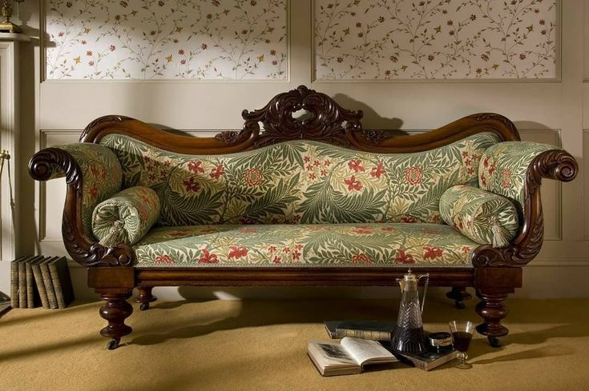
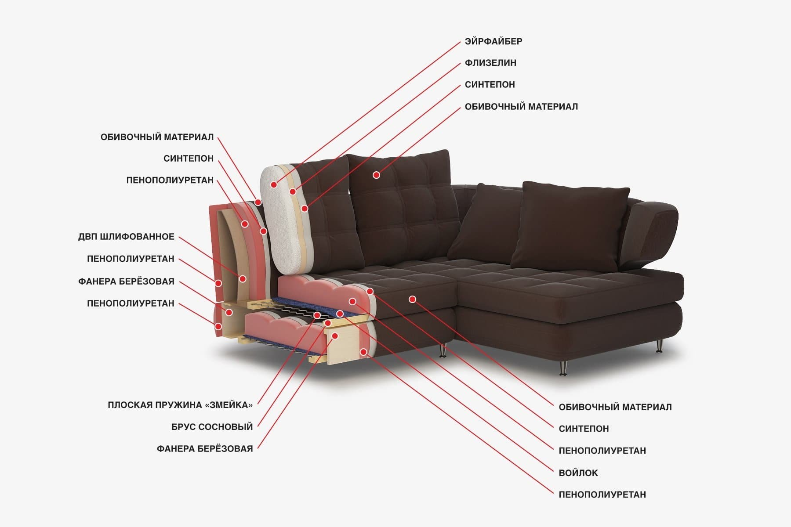
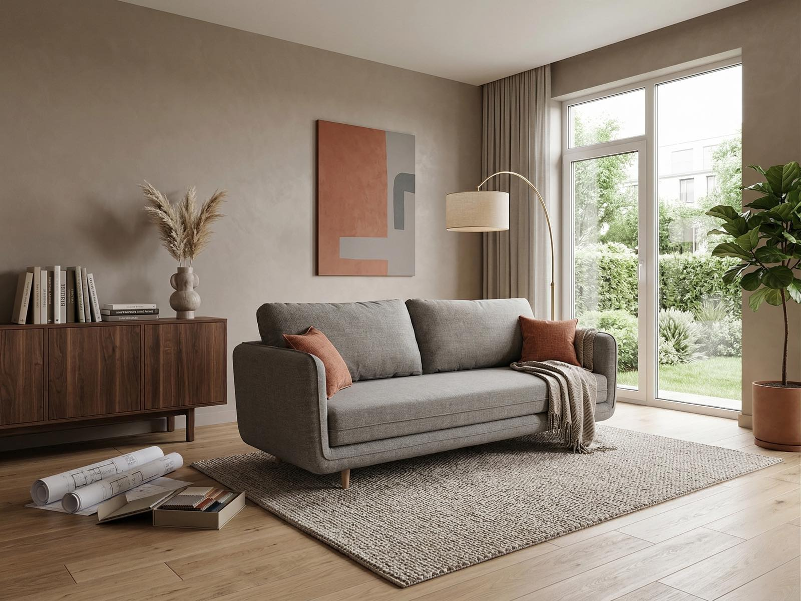

История мебели: от примитивных форм к изисканному дизайну
История мебели насчитывает тысячилетия. В древнейшии времена люди использовали для сидения и сна камни, брёвна, шкуры животных. С развитием цивилизации и появлением новых технологий мебель начала приобретать более сложные формы. В Древнем Египте мебель изготавливалась из дерева, украшалась резьбой и инкрустицией. В Древней Греции и Риме ценилась элегантность. Средневековье характеризавалось массивностью и функциональностью, а эпоха Возрождения - возвращением к античным формам и роскошью.
Каждый исторический период оставил свой отпечаток в дизайне мебели, формируя разнообразие стилей, которые мы видем сегодня. От барокко и рококо до модерна и минимализма - каждый стиль отражает дух своей эпохи.

Материалы для изготовления мебели: разнообразие и характеристики
Выбор материала для изготовления мебели играет ключевую роль в её долговечности, внешнем виде и стоимости. Наиболее распространённые материала:
- Дерево: классический и экологический материал, обладающий прочностью, красотой и долговечностью. Используются различные породы дерева, такие как дуб, бук, сосна, ясень, орех, каждая из которых имеет свои уникальные характеристики
- Металл: прочный и долговечный материал, часто используемый для каркасов мебели, ножек и декоративных элементов. Популярны сталь, алюминий, кованое железо.
- Пластик: легкий, доступный и универсальный материал, позволяющий создавать мебель различных форм и цветов.
- Стекло: используется для столешниц, полок и декоративных элементов, придавая мебели легкость и современный вид.
- МДФ и ДСП: более доступные по цене материалы, чем натуральное дерево, но менее долговечные. Используются для изготовления корпусной мебели.
- Ротанг и бамбук: натуральные и экологичные материалы, придающие мебели экзотический вид.

Современные тенденции в дизайне мебели: функциональность и стиль
Современный дизайн мебели характеризуется стремлением к функциональности, минимализму и экологичности. В тренде:
- Многофункциональная мебель: мебель-трансформер, диваны-кровати, столы с регулируемой высотой – все это позволяет экономить пространство и адаптировать мебель к различным потребностям.
- Экологичные материалы: все больше производителей используют переработанные материалы, натуральное дерево и экологически чистые покрытия.
- Минимализм: Чистые линии, простые формы и отсутствие лишних деталей – основные принципы минималистичного дизайна.
- Скандинавский стиль: Светлые тона, натуральные материалы и функциональность – характерные черты скандинавского стиля.
- Индивидуализация: Возможность выбора цвета, материала и конфигурации мебели позволяет создать уникальный интерьер, отражающий индивидуальность владельца.

Как выбрать мебель: советы и рекомендации
Выбор мебели – ответственный процесс, требующий учета множества факторов:
- Размер помещения: мебель должна соответствовать размерам комнаты, не загромождая пространство.
- Функциональность: определите, для каких целей вам нужна мебель.
- Стиль интерьера: мебель должна гармонировать со стилем интерьера.
- Качество материалов: обратите внимание на качество материалов и фурнитуры.
- Бюджет: определите свой бюджет и выбирайте мебель в его рамках.
- Эргономика: Мебель должна быть удобной и соответствовать анатомическим особенностям человека.
